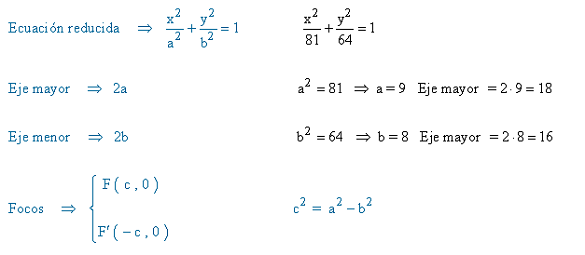

Por Nicol Rodriguez
En geometría analítica, las secciones cónicas son todas las curvas resultantes de las diferentes intersecciones entre un cono y un plano, cuando ese plano no pasa por el vértice del cono. Existen cuatro tipos de secciones cónicas: la circunferencia, la elipse, la parábola y la hipérbola.
⦁ CIRCUNSFERENCIA: el plano es perpendicular al eje del cono.
⦁ ELIPSE: el plano forma un ángulo con el eje del cono superior al que forma la generatriz con el eje, y es inferior a 90º.
⦁ PARÀBOLA: cuando el plano es paralelo a una generatriz del cono.
⦁ HIPÈRBOLA: cuando el ángulo que forma el plano con el eje del cono es inferior al que forma la generatriz con dicho eje.
ELIPSE La elipse es una línea curva, cerrada y plana muy parecida a la circunferencia, pero su forma es más ovalada. En particular, es el resultado de cortar la superficie de un cono con un plano oblicuo cuyo ángulo respecto al eje de revolución es mayor que el de la generatriz. La suma de las distancias a dos puntos (llamados focos) es constante (a dicho valor se le representa por 2a).
⦁ Eje secundario: Es la mediatriz del segmento FF'.
⦁ Eje focal: Es la recta que pasa por los focos.
⦁ Eje secundario: Es la mediatriz del segmento FF'.
⦁ Centro: Es el punto de intersección de los ejes.
⦁ Eje menor: Es el segmento de longitud 2b, b es el valor del semieje menor.
⦁ Lado Recto: es el segmento perpendicular al eje principal que, pasando por un foco, une dos puntos de la elipse.
⦁ Distancia focal: Es el segmento de longitud 2c, c es el valor de la semi-distancia focal.
⦁ Vértices: Son los puntos de intersección de la elipse con los ejes: A, A', B y B'.
⦁ Eje mayor: Es el segmento de longitud 2a, a es el valor del semieje mayor.
Una parábola es el lugar geométrico de los puntos del plano que equidistan de un punto fijo (llamado foco) y de una recta fija (denominada directriz).
ELEMENTOS:
⦁ Foco (F): es un punto fijo del interior de la parábola. La distancia de cualquier punto de la parábola al foco es igual a la distancia de ese mismo punto a la directriz de la parábola.
⦁ Directriz (D): es una recta fija externa a la parábola. Un punto de la parábola tiene la misma distancia a la directriz que al foco de la parábola.
⦁ Parámetro (p): es la distancia desde el foco hasta la directriz.
⦁ Radio vector (R): es el segmento que une un punto de la parábola con el foco. Su valor coincide con la distancia del punto hasta la directriz.
⦁ Eje (E): es la recta perpendicular a la directriz que pasa por el foco y es el eje de simetría de la parábola, en la gráfica de abajo corresponde al eje de las ordenadas (eje Y). También se dice eje focal.
⦁ Vértice (V): es el punto de intersección entre la parábola y su eje.
⦁ Distancia focal: es la distancia entre el foco y el vértice, o entre la directriz y el vértice. Su valor siempre es igual a P/2..
ECUACIONES CANÓNICAS DE LA PARÁBOLA:
La forma de la ecuación reducida de la parábola depende de si esta es horizontal o vertical. Fíjate en la siguiente representación gráfica donde se muestran las 4 posibles variantes:
Cuando el vértice de la parábola es un punto cualquiera utilizamos la ecuación ordinaria de la parábola, cuya expresión es:
En geometría analítica, una hipérbola es el lugar geométrico de los puntos del plano que cumplen la siguiente condición: el valor absoluto de la diferencia de las distancias desde un punto cualquiera de la hipérbola hasta dos puntos fijos (llamados focos) debe ser constante.
ELEMENTOS:
⦁ Focos: son dos puntos fijos característicos de cada hipérbola (puntos F y F’ en el gráfico de abajo). El valor absoluto de la diferencia entre las distancias de cualquier punto de la hipérbola a cada foco es constante e igual a
⦁ Eje focal o principal: es la recta que pasa por los dos focos de la hipérbola. Corresponde a un eje de simetría de dicha figura geométrica. También se llama eje transverso o transversal.
⦁ Eje secundario: es la mediatriz del segmento FF’ (recta que pasa por los puntos B y B’). Además, es una recta perpendicular al eje focal y es otro eje de simetría de la hipérbola
⦁ Centro (O): es el punto de intersección de los dos ejes y el punto medio de los dos vértices y los dos focos. Como la hipérbola tiene dos ejes de simetría, también es el centro simétrico.
⦁ Vértices (A y A’): son los puntos donde se cortan las ramas de la hipérbola con el eje focal.
⦁ Radios vectores (R): son los segmentos que van desde cualquier punto de la hipérbola hasta cada foco.
⦁ Distancia focal: es la longitud del segmento compuesto entre los dos focos.
⦁ Eje mayor o real: es el segmento que va desde el punto A hasta el punto A’, su longitud es equivalente a
⦁ Eje menor o imaginario: es el segmento que va desde el punto B hasta el punto B’, su longitud es equivalente a
⦁ Asíntotas: son las rectas discontinuas representadas en la gráfica. Más abajo veremos cómo se calculan.
Sin embargo, para que la ecuación anterior sea de una hipérbola, los coeficientes y deben ser diferente de cero y, a la vez, tener signo contrario.
C(h,k)
C(0,0) eje focal ¨x¨
C(0,0) eje focal ¨y¨
⦁ Calcula el vértice, el foco y la directriz de la parábola cuya ecuación es la siguiente: Y2 = 8X
En primer lugar, la parábola será horizontal porque sigue la siguiente expresión de la ecuación reducida o canónica de la parábola: Y2 = 2px. Así que su parámetro p es:
2p=8 p= 8/2 p= 4
Por otra parte, como la parábola sigue la ecuación reducida o canónica, significa que su vértice o centro está en el origen de coordenadas: V(0,0).
El foco de una parábola siempre está situado en el eje de la parábola y a una distancia de p/2 del vértice de la parábola, con lo que sus coordenadas son: F(p/2 , 0) = F(4/2 , 0) = F(2,0)
Calculamos la directriz
X=-p/2
X = -4/2
X = -2
⦁ Calcular los ejes, focos, excentricidad y representar gráficamente

⦁ ¿Cuál es la ecuación de la hipérbola con centro en el punto (-1,3), una longitud del semieje real de 3 unidades y una longitud del semieje imaginario (paralelo al eje Y) de 7 unidades?
Para hallar la ecuación de la hipérbola simplemente tenemos que aplicar la fórmula de la ecuación ordinaria de la hipérbola, sustituimos las coordenadas del centro de la hipérbola en la ecuación:
Y, finalmente, sustituimos los valores de las incógnitas a y b
ENLACES RELACIONADOS
⦁ https://calculo.cc/temas/temas_geometria_analitica/lg_conica/problemas/p_parabola.html
⦁ https://www.universoformulas.com/matematicas/geometria/hiperbola/
⦁ https://aga.frba.utn.edu.ar/parabola/
⦁ https://www.youtube.com/watch?v=FlsYCYbmJGU
⦁ https://www.youtube.com/watch?v=P-PhOy9F7Sg
⦁ https://www.youtube.com/watch?v=Se7nSqmYUJE